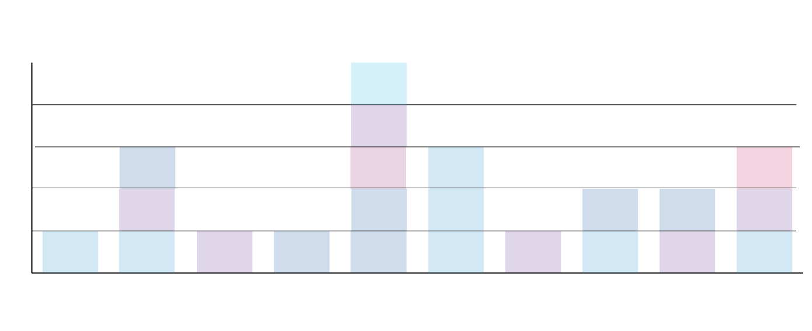

2018 was a noteable year for the Nobel Prize: third woman to win the Nobel Prize in physics and the fifth woman to win the Nobel Prize in Chemistry. The gender gap in Nobel's 118-year history is glaringly wide, as only 51 women have won the prize, compared to 853 men. Change is slow to come: just 2 percent of Nobel Laureates in the 20th century were women, compared to 6 percent in the 21st century.
Many women have seen their foundational and ground-breaking research overlooked while their male supervisors and colleagues got the credit (such as British biophysicist Rosalind Franklin and Chinese physicist Chien Shiung Wu). The women who have won that elusive Nobel Prize made their mark despite the odds.
The underlying data for the images provided below comes from the Nobel Laureates project published by Matthew Weber of Reuters Graphics. The Reuters team built the initial project using information from The Nobel Foundation.
The Nobel Prize has been dominated by scientists from just a handful of countries over the course of its history: the United States, the United Kingdom, Germany, France, Sweden, Russia, Japan, and Poland. There are some differences across prizes, such as the fact that France has the most Nobel Laureates in Literature compared to the other countries, and Germany ekes past the United Kingdom with more Nobel Laureates in Physics. While the United States still claims the most winners of the Nobel Peace Prize, its impact is much smaller: a significant number of the winners have been from outside the eight dominating nations.
In contrast, women who have won the Nobel Prize are a little more spread out. In the sciences, there have been three winners in physics, five in chemistry, and 12 in medicine. Fourteen women have won the Nobel Prize in Literature, 1 woman for the Nobel Prize in Economics, and 17 women for the Nobel Peach Prize. Of those 53 women, only 12 are from the United States. The majority of the winners are from other countries, including Canada (Physics), Egypt (Chemistry), Chile (Literature), Norway (Medicine), and Guatemala (Peace).
Women Who Won the Nobel Prize Came From All Around the World
Women who have won the Nobel Prize tend to be geographically more diverse. While the “Big Research”
countries--the United States, the United Kingdom, France, Germany, Sweden, Russia, Japan, and
Poland--are well represanted, a significant number of winners come from outside those countries.
Source: The Nobel Foundation,
Adapted from “Nobel Laureates” by Reuters Graphic

Women Who Won the Nobel Prize Came From All Around the World
The winners of the Nobel Prizes tend to come from the “Big Research” countries--the United States, the United Kingdom, Germany, France, Sweden, Russia, Japan, and Poland--but a larger proportion of women come from other parts of the world in .
Source: The Nobel Foundation,
Adapted from “Nobel Laureates” by Reuters Graphic

Around the World: Women Who Won the Nobel Prize
While eight countries dominate the world’s scientific research, women who
have won the Nobel Prize tend to be very geographically diverse,
especially those who won the Nobel Price in literature. The diversity is
very prominent among Nobel Peace Prize winners.
Source: The Nobel Foundation,
Adapted from “Nobel Laureates” by Reuters Graphic
While the sad reality is that the Nobel committee--and the greater scientific community--has overlooked the contributions of female scientists over the past 100 years, the last 20 years have shown an attempt to be better. While there is a long way to go to close the gender gap, the Nobel committee has recognized the contributions of women over the past few years. Women have won the Nobel Peace Prize over the years, but recently, women in the sciences have also been honored.

Women Making a Mark in the 21st Century
Women were recognized for their achievements across all categories, not just the Nobel Peace Prize.
Source: The Nobel Foundation, Adapted from “Nobel Laureates” by Reuters Graphic
Nobel Prize Winners (2008-2018): Women Making a Mark
Women made up 6 percent of Nobel Laureates in the 21st Century. Over the
past 10 years, there were more literary and scientific Nobel Prize winners than
Nobel Peace Prize winners.
Source: The Nobel Foundation,
Adapted from “Nobel Laureates” by Reuters Graphic
Women Making a Mark in the 21st Century
Women made up 6 percent of Nobel Laureates in the 21st Century,
compared to just 2 percent in from 1901-2000. While the majority
of the winners won the Nobel Peace Prize, they also made their mark
in other fields.
Source: The Nobel Foundation,
Adapted from “Nobel Laureates” by Reuters Graphic
The Nobel Prize for 2019 will be announced in the next few weeks. There are plenty of women who have been overlooked in the past, and it would be a positive sign if the committee recognized some of them.